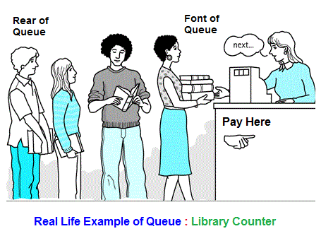
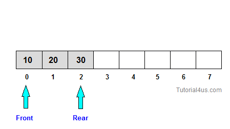

Queue
Queue is work on the principal of First-In-First-Out (FIFO), it means first entered item remove first. Queue have two end front and rear, from front you can insert element and from rear you can delete element.
Real life example of queue
A common example of queue is movie theater ticket counter, there first person who stand in front of ticket window take ticket first and remove from line and new person always stand in line from end.
Application of Queue Data Structure in C
Queues are used for any situation where you want to efficiently maintain a First-in-first out order on some entities. Transport and operations research where various entities are stored and held to be processed later i.e the queue performs the function of a buffer. In a multitasking operating system, the CPU cannot run all jobs at once, so jobs must be batched up and then scheduled according to some policy. Again, a queue might be a suitable option in this case.
Queue Operation
The basic operation that can be perform on queue are;
Insert an element in a queue.:
Delete any element from the queue.:
Insert an element in a queue.

In queue insert any element form Rear. If you insert new element in queue value of Rear will be increased by 1.
Insert an element in a queue.
void insert()
{
int item;
printf("Element : ");
scanf("%d",&item);
if(front==(rear+1)%3)
{
printf("Queue is Full");
return;
}
if(front==-1)
{
rear=front=0;
}
else
{
rear=(rear+1)%3;
}
cque.cqueue[rear]=item;
printf("Successfully Insert");
}
Delete any element from the queue.
In queue delete an element form Front. If you delete an element from queue value of Front will be increased by 1.
Delete any element from the queue.
void del()
{
int num;
if(front==-1)
{
printf("Queue Empty");
return;
}
else
{
num=cque.cqueue[front];
printf("Deleted item : %d",num);
}
if(front==rear)
{
front=-1;
}
else
front=(front+1)%3;
}